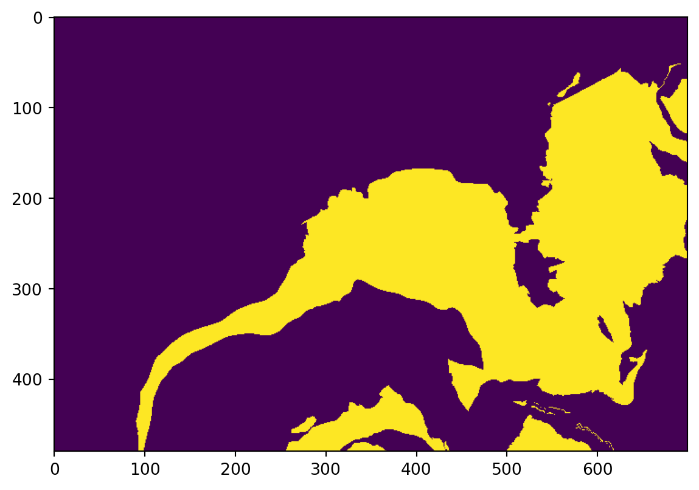
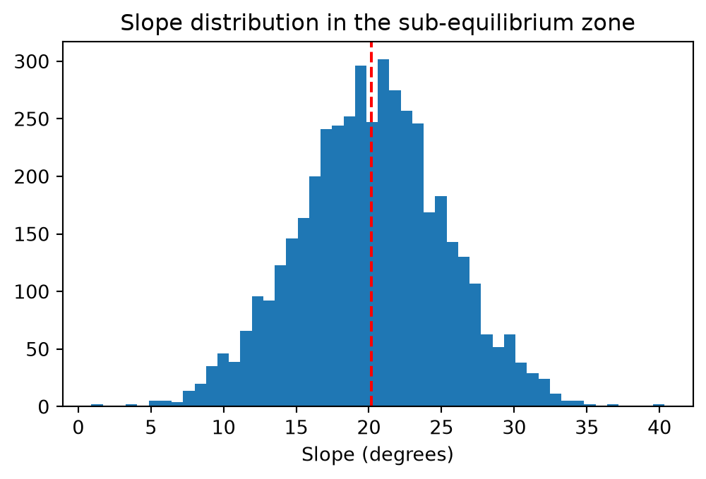

Sion and surrounding mountains (Switzerland). Photo by Matthias Kastner on Unsplash
NoteThis exercise in brief
Big Question
Where are the areas most susceptible to new rock instabilities or further destabilization within existing landslide zones, based on topographic and geological factors?
What You Will Do
You will combine vector geological maps with raster elevation data to identify areas with high landslide susceptibility. Using Python libraries developed for handling geospatial data , you will filter specific rock types, calculate slope gradients from a Digital Elevation Model (DEM), and apply a statistical threshold to pinpoint zones where topography and lithology create a critical risk of failure.
Why This Matters
Understanding slope stability is critical for land-use planning and hazard mitigation in Alpine environments. By analyzing the relationship between lithology, slope angle, and historical instability ata, we can predict future failures before they occur. This aligns with the Swiss federal approach to hazard mapping, moving from inventory catalogs to indicative susceptibility maps using reproducible code.
Your Tasks
Data Filtering: Query vector attributes to isolate lithologies prone to instability (Typ_code 800, 801, 802, 870) and existing instability structures (Typ_code 700, 701).
Terrain Analysis: Compute slope gradients from the DEM and calculate statistical metrics (mean) to determine the stability threshold (\(\phi\)).
Susceptibility Modeling: Apply boolean logic and raster masking to identify: 3.1. New potential instabilities on favorable lithologies where slope > \(\phi\). 3.2. Critical sub-zones within existing landslides where slope > \(\phi\).
Visualization & Export: Generate static maps highlighting risk zones with appropriate color ramps and transparency, and export summary statistics (areas).
Skills You Will Gain
Calculating terrain attributes (slope, hillshade) from DEM arrays.
Spatial Querying: Filtering vector data based on attribute expressions.
Map Algebra: Performing cell-by-cell mathematical operations and reclassification on raster grids.
Cartographic Output: Rendering geospatial data to image formats (PNG/JPG) with custom colormaps.
Points for Discussion
The Threshold Assumption: We assume the mean slope of existing instabilities represents the internal friction angle (\(\phi\)). How valid is this assumption across different lithological units?
Data Resolution: How does the 25m pixel size affect the precision of the slope calculation and the resulting hazard boundaries?
Model Limitations: This model relies solely on slope and lithology. How would you integrate dynamic triggers (e.g., precipitation data, seismic history) into this Python workflow?
List your results (see list in the Final questions section at the end).
Step-by-step instructions
Install libraries
This tutorial requires the following libraries:
rasterio
geopandas
matplotlib
numpy
You can check if they are installed (and check which version you have) by running:
libs = ["rasterio", "geopandas", "matplotlib", "numpy"]for lib in libs:try: module =__import__(lib)print(lib +" is installed")exceptImportError:print(lib +" is NOT installed")
rasterio is installed
geopandas is installed
matplotlib is installed
numpy is installed
We will first prepare our data. The first step is to load the DEM at 25m from the Swiss Federal Office of Topography (swisstopo). The entire dataset is described on the swisstopo website, but we will use a subset over the region of Sion, Canton of Valais. The DEM is already provided and available in the data folder as a GeoTiFF, and we open it using the rasterio.open function.
NoteQuestion
Load the geotiff using rasterio.open as in the following block and save the following attributes as variables:
profile
shape
bounds
crs
transform
Inspect all variables
What variables are in matrix coordinates? What variables are in geographic coordinates?
What is the coordinate reference system of the layer ? What is its resolution ?
Listing 1: Load raster with rasterio.
with rasterio.open("data/DEM/Sion_MNT25.tif") as src:# with rasterio.open(source_dir / "DEM" / "Sion_MNT25.tif") as src: dem = src.read(1) # The data profile = src.profile # Raster metadata (contains all the variables below) shape = src.shape bounds = src.bounds crs = src.crs transform = src.transform # Affine transformation
Lithologies favorable to rock instabilities
Second, we will extract the lithologies that favour instabilities the geopandas library. This library is an extension of pandas specifically designed to handle geospatial data.
You may use geopandas to read a vector file (for instance shapefile) into a GeoDataFrame (gdf), which is simply a DataFrame that contains a geometry column. The example below shows how to load the Bedrok_PLG.shp shapefile with gpd.read_file and perform basic operations. Really, a gpd object represents the table of attributes you might be familiar with in QGis.
TipEncoding
Specifying the encoding argument to utf-8 is critical to preserve French accents in the attributes.
Spend some time exploring your shapefile with the following functions:
# Print the first 5 columnsbedrock_plg.head(5)
# Print the column namesbedrock_plg.columns
# Query the first row/feature - remember, in Python the first row/column is represented by the index 0 (not 1)bedrock_plg.iloc[0]
# Query a specific columnbedrock_plg['Typ_code']
Data filtering
We need to filter out the original data to keep only the lithologies of interest. This can be done using the pd.query() function with the desired condition:
Lithologies will be used as mask in the rest of the study. In order to mask out raster data, the lithology layer needs to be converted into a raster that is aligned with the raster layer to mask (here, the Sion_MNT25.tif layer). Aligned means that the pixels of both layers have the same reference coordinates and extent, providing a 100% overlap. To ensure that, we use the shape and transform variables obtained from the DEM and pass them to rasterio’s rasterize function:
Listing 5: Function to rasterize a shapefile
lithologiesR = rasterize( shapes=((geom, 1) for geom in lithologies.geometry), out_shape=shape, transform=transform, fill=0, dtype="uint8")
For each polygon in the favorable lithologies, the created pixels will have a value of 1. Other pixels will have a value of 0 (from the ‘fill’ parameter). Let’s visualize the result:
Listing 6: Plotting a raster using matplotlib.
import matplotlib.pyplot as pltplt.imshow(lithologiesR)

Exporting a raster
The next step is to export the raster.
We ensure that the target directory exists - or, if not, create it - using the makedirs function from the os library.
We write the raster with - counter-intuitively - the rasterio.open function (→ we prepare the file inside which the data will be written) followed by the .write() function (→ that actually writes the data).
ImportantUsing profile for alignement
The objective here is to create a raster with the exact extent and resolution as the reference raster - here the dem variable. To ensure alignement, we pass the profile variable that we extracted from the Sion DEM to the function, which contains all required information (e.g., bounds, resolution, crs, affine transform etc.).
Listing 7: Saving a raster and ensuring alignment.
import osos.makedirs("data/outputs", exist_ok=True)with rasterio.open("data/outputs/lithologiesR.tif", "w",**profile) as dst: dst.write(lithologiesR, 1)
The code writes a GeoTiFF file with the same properties (shape, crs, transform) as the original DEM, with one band (defined by the ‘count’ parameter).
Calculating areas
The first assignment is to calculate the area covered by lithologies favourable to instabilities. This can essentially be done from both the shapefile and the raster.
Using the shapefile, you need to add a new column and use the .area function followed by the .sum() function.
WarningSolution
Listing 8: Computing area from polygons.
Code
litho_area = lithologies.area.sum()print(f"The area of favourable lithologies computed from polygons is: {litho_area:.2f} m²")
Using the raster, we first need to get the area of a pixel based on their width and height which are respectively the first and third elements of the transform variable. We can then sum the pixels (remember, all favourable lithologies have a value of 1, the other a value of 0) and multiply the result by the pixel area. We do that with numpy.
WarningComputing pixel area
Listing 9: Computing pixel area from width/height.
What is the area of favourable lithologies computed from the raster?
How much difference is there with the polygon approach? Why?
Existing instabilities
Let’s now inspect and identify existing rock instabilities. Load the Instability_Structures_PLG shapefile following Listing 2 and inspect its features as we did for the bedrock polygons.
TipUnique values
You can display all unique values in one column using df['col_name'].unique().
NoteQuestions
What instabilities do you identify?
Plot the polygons of instabilities with a symbology based on the type following Listing 4
Filter the shapefile following Listing 3. We want to retrieve the values '700' and '701' from the TYP_CODE column. Save the result into a new variable called instabilities.
Rasterize instabilities into a raster named instabilitiesR following Listing 5.
Estimate the area of existing instabilities following Listing 8.
Export instabilitiesR to “data/outputs/instabilitiesR.tif” following Listing 7.
Slope calculation
The next step is to calculate the slope from the DEM. Most desktop GIS software implement slope calculation - so do a lot of Python packages (e.g., PyDEM). Below is an illustration of how slope is calculated from scratch using numpy. If you have time, go through the code and ask any question you might have. If you don’t, you can just use the slope variable.
TipSlope calculation
The slope of a cell is usually calculated using the Horn algorithm (Horn, 1981), and considers the 8 neighbouring cells elevation (N, S, E, W, NE, NW, SE, SW). With np.roll, we can retrieve the information about each neighbouring cell by just shifting the array, for every cell at once.
Then, using Horn’s formula, we calculate how much elevation changes east-west (dx) and north-south (dy), that will help us calculate the slope in degrees.
Note that all operations, including np.roll, np.degrees or np.arctan are performed on every pixel of the DEM, this is what we call vectorized operations. It is built-in to work faster and in a cleaner way than what a loop would do.
Before moving on to analyze our slope values, we need to correct for the issue with slope calculation at the map’s edges. When we do np.roll, the pixels of the first and last rows, together with pixels from the first and last column are moved to the other end of the raster and might induce errors locally. For this reason, we will discard them from our analysis by assigning them the ‘not a number’ (NaN) value.
In the code above, we simply take all pixels from the first row [0,:], all pixels from the last row [-1,:], all pixels form the first column [:,0] and all pixels from the last column [:,-1] and set them to NaN using np.nan
Now - very importantly - the slope raster is a numpy object, which means it is a raster, but depleted of any spatial reference. This implies two things.
Firstly, to plot the data with coordinate extents, we need to specify the extent argument of plt.imshow. For this, use the bounds variable we got from Listing 1.
Secondly, to save the data, we need to specify some more parameters compared to Listing 7. Specifically, we want to update the profile variable we got at Listing 1 to i) make sure we store the data as float 32 (→ a format that allows storing loads of decimals) and ii) we set the no data value to be a nan (→ a not a number format, equivalent to a transparent colour on QGIS).
profile.update(dtype="float32", nodata=np.nan)with rasterio.open("data/outputs/slope.tif", "w", **profile) as dst: dst.write(slope.astype("float32"), 1)
Ground truth
The file subequil_PLG_r.shp contains an area where instabilities have been observed in the field. Load it into a variable called subequil_PLG following Listing 2.
We will use this area to extract the slope from slope, so we need to rasterize it, but in a special format that can be used as a mask, which is done using the geometry_mask function.
Listing 11: Rasterize shapefile into a boolean mask.
So what is the difference between the rasterize function used in Listing 5 and the geometry_mask function used in Listing 11? The short answer is the type of data returned by the function.
Rasterize returns an integer type (e.g., 0, 1, 2, 3):
lithologiesR.dtype
dtype('uint8')
Geometry_mask returns a boolean type (e.g., True/False). This is the format commonly used to mask data:
We need to extract the slope contained within the mask we just created. Save it into a new variable called subequil_slope. Any idea how to do this using boolean indexing?
WarningAnswer
subequil_slope = slope[subequilR]
B2. Estimate the angle of repose \(\Phi\)
We can plot a distribution of observed slope values within this zone using plt.hist. The mean value of this plot is the mean value of the slope in “sub-equilibrium”, which corresponds to the threshold above which instabilities can be reactivated.
Listing 12: Histogram of slopes within the area of interest.
fig, ax = plt.subplots(figsize=(6, 3.5))ax.hist(subequil_slope, bins=50)ax.axvline(np.nanmean(subequil_slope), color="red", linestyle="--")ax.set_xlabel("Slope (degrees)")ax.set_title("Slope distribution in the sub-equilibrium zone");

NoteQuestion
Compute the mean slope of subequil_slope using the np.nanmean() function.
Save it under a new variable called phi_angle.
Step C: Estimating area susceptible to new instabilities
Area of the existing instabilities on favorable lithologies
Susceptible areas to new rock instabilities
C1. Estimate the area of existing instabilities on favourable lithologies
The next step identify areas where we have existing instabilities at locations where the lithology is favorable. For this, you need instabilitiesR (?@lst-instab_raster) and lithologiesR (Listing 5). Save it in a new variable name called litho_inst.
For this, we need to introduce logical operators. For instance:
lithologiesR == 1 returns a boolean raster (same as in Listing 11) where values of 1 are not set to True and values of 0 to False.
Same for instabilitiesR.
Now, which logical operator would you use to identify the pixels where both rasters are True?
WarningSolution
The operator AND (in Python &). Don’t forget to wrap each side of the operator in parentheses.
Calculate the area of existing instabilities on favourable lithologies outside instabilities (see Listing 10)
C3. Estimate the slope of zones on favourable lithologies outside instabilities
We will now create a subset of the slope map for the pixels identified in litho_fav (@st-fl_ni). The slope might contains some no data values (→ np.nan), which we filter out using np.isfinite.
The next step is to identify is to identify the pixels in slope_p_fav_inst that have a slope ≥ \(\Phi\) (i.e., phi_angle). For this, we use the function np.where(). And since the doc for this function is the perfect example of how incomprehensible instructions might be for non experts, we provide you with the solution.
slope_class = np.where(slope > phi_angle, 1, 0)
We can now identify the pixels in favourable lithologies that are prone to new instabilities.
p_fav_inst = (slope_class==1) & (litho_fav==1)
NoteQuestions
Plot the raster
Calculate the area of pixels in favourable lithologies that are prone to new instabilities (see Listing 10)
Step D: Susceptible zones inside existing instabilities
Repeat the same as step C4 but considering zones inside existing instabilities (→ instabilitiesR). Save it in a variable name called fav_inst.
Note## Questions
Plot the raster
Calculate the area of susceptible zones inside existing instabilities (see Listing 10)
Total susceptible areas to rock instabilities
Calculate the total area where we have a susceptibility to instabilities (→ p_fav_inst + fav_inst)
Final questions
The Threshold Assumption: We assume the mean slope of existing instabilities represents the internal friction angle (\(\phi\)). How valid is this assumption across different lithological units?
Data Resolution: How does the 25m pixel size affect the precision of the slope calculation and the resulting hazard boundaries?
Model Limitations: This model relies solely on slope and lithology. How would you integrate dynamic triggers (e.g., precipitation data, seismic history) into this Python workflow?
Results
List your results. Provide all the necessary numbers used for the calculation. Make sure you round the digits to a reasonable number of decimals.
What proportion (in %) of the area of the favorable lithologies is currently instable ?
What proportion (in %) of the zones situated on favorable lithologies could be more likely destabilized in the future?
What proportion (in %) of the study area is affected by instabilities ?
What proportion (in %) of the area of the existing instabilities is susceptible to new instabilities.
What proportion (in %) of the study area is still susceptible to instabilities?
Links to useful libraries and tools
Python libraries
geopandas: An extension of pandas for working with geospatial vector data, adding geometry support and spatial operations to DataFrames.
contextily: A useful package to retrive tiles from basemap and plot them behind your mpl maps.
cartopy: If you want to elevate your Python plotting skills, cartopy is probably the way to go.
{kind=link}
{kind=link}
{kind=link}
{kind=link}